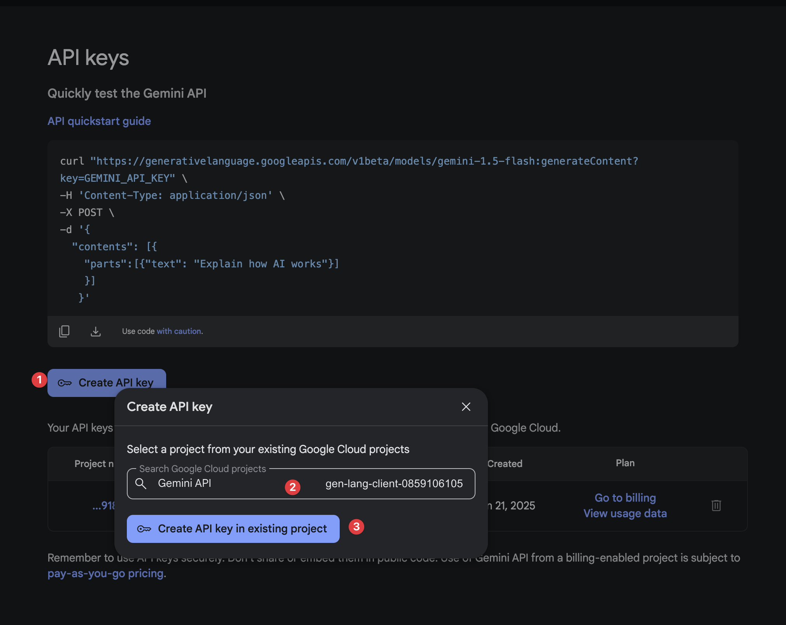
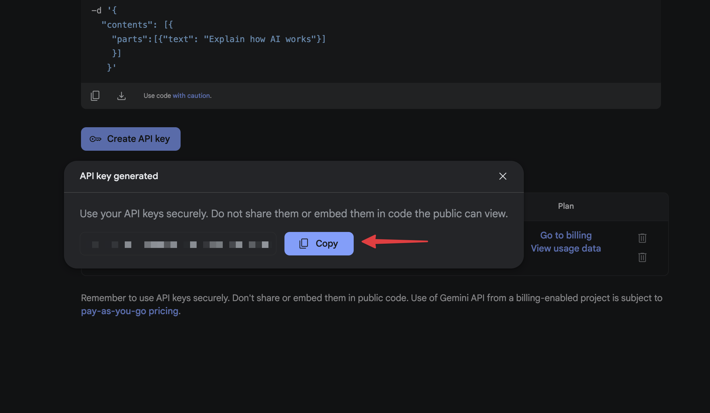

Hướng dẫn lấy Gemini API Key
Để sử dụng SRT Translator, bạn cần có Gemini API Key. Dưới đây là cách để lấy API Key:
- Vào trang Google AI Studio.
- Đăng nhập tài khoản Google
- Click nút "Create API key" và làm theo hình dưới đây

- Copy API key và quay lại SRT Translator để sử dụng

Chú ý: chỉ cần tạo API key 1 lần, có thể tái sử dụng ở những lần sau.